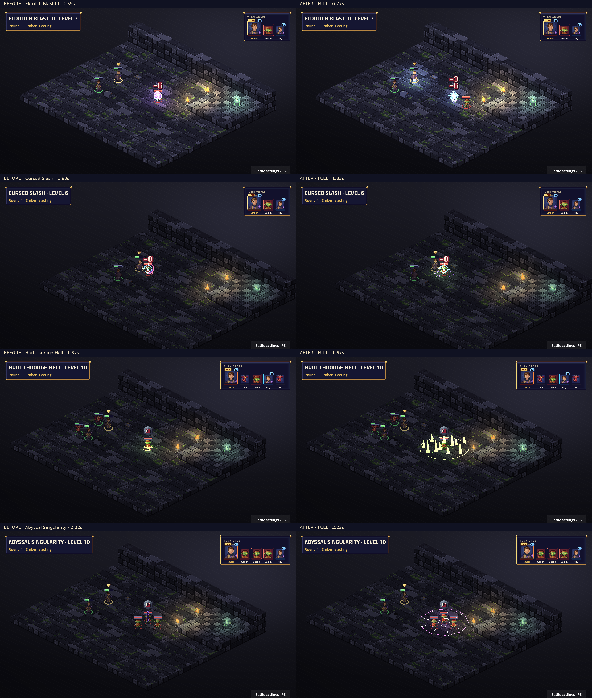

Attack · Level 1
Weapon attack, weapon range: weapon damage
Darkness, lingering Hunger and the imp summon
Native TV capture: before on the left, after on the right. Fixed map and seed; real engine events and BeatPlayer. Level labels are the character’s unlock level. Videos preserve the complete cast, impact, effect tails and camera settle. Posters align the impact for comparison.
Frozen before: 4eb38ab6a3d287849553c8c0012cb5e39483d76e. Review notes and limitations · Frame measurements · Actual beat timings
Complete 44-sample contact sheet · Native cast close-up

Static modifiers have no standalone proc. Every ability and visible proc must have a real fixture for this capture to succeed.
| Name | Subclass | Level | Kind | Cut-in | Before keys | After keys |
|---|---|---|---|---|---|---|
| Armor of Agathys | Base class | 1 | ability | short | characters.buff · fx.frost.frost | characters.warlock_pact · fx.warlock_armor_of_agathys.frost |
| Arms of Hadar | Base class | 1 | ability | short | characters.slam · fx.necrotic.grave | characters.warlock_rift · fx.warlock_arms_of_hadar.grave |
| Chill Touch | Base class | 1 | ability | none | characters.point · fx.necrotic.grave | characters.warlock_lash · fx.warlock_chill_touch.grave |
| Eldritch Blast | Base class | 1 | ability | none | characters.point · fx.force.eldritch · projectiles.eldritch | characters.warlock_lash · fx.warlock_eldritch_blast.force · fx.warlock_eldritch_blast_shot.force |
| Hellish Rebuke | Base class | 1 | ability | none | characters.cast · fx.flames.hellfire | characters.warlock_lash · fx.warlock_hellish_rebuke.hellfire |
| Hex | Base class | 1 | ability | short | characters.point · fx.hex.shadow | characters.warlock_pact · fx.warlock_hex.shadow |
| Hex Damage | Base class | 1 | proc | none | No art key | fx.warlock_hex_damage.grave |
| Pact Magic | Base class | 1 | proc | none | No art key | fx.warlock_pact_magic.force |
| Poison Spray | Base class | 1 | ability | none | characters.point · fx.toxin.venom | characters.warlock_lash · fx.warlock_poison_spray.venom |
| Witch Bolt | Base class | 1 | ability | short | characters.point · fx.shock.violet · projectiles.lightning | characters.warlock_lash · fx.warlock_witch_bolt.storm |
| Agonizing Blast | Base class | 2 | proc | none | No art key | fx.warlock_agonizing_blast.force |
| Devils Sight | Base class | 2 | static | none | No art key | No art key |
| Fiendish Vigor | Base class | 2 | ability | none | characters.buff · fx.aura.shadow | characters.warlock_pact · fx.warlock_fiendish_vigor.hellfire |
| Repelling Blast | Base class | 2 | proc | none | No art key | fx.warlock_repelling_blast.force |
| Darkness | Base class | 3 | ability | short | characters.summon · fx.circle.shadow | characters.warlock_rift · fx.warlock_darkness.shadow |
| Hold Person | Base class | 3 | ability | short | characters.cast · fx.hold.shadow | characters.warlock_pact · fx.warlock_hold_person.shadow |
| Misty Step | Base class | 3 | ability | short | characters.cast · fx.misty.shadow | characters.warlock_pact · fx.warlock_misty_step.mist |
| Shatter | Base class | 3 | ability | full | characters.summon · signature.spell_shatter.thunder | characters.warlock_rift · fx.warlock_shatter.thunder |
| Counterspell | Base class | 5 | ability | none | characters.point · fx.dispel.shadow | characters.warlock_pact · fx.warlock_counterspell.arcane |
| Hunger of Hadar | Base class | 5 | ability | full | characters.summon · signature.spell_hunger_of_hadar.void | characters.warlock_rift · fx.warlock_hunger_of_hadar.void |
| Hadar Turn Pulse | Base class | 5 | proc | none | No art key | fx.warlock_hunger_of_hadar_pulse.frost |
| Maddening Hex | Base class | 5 | ability | none | characters.point · fx.psychic.dread | characters.warlock_pact · fx.warlock_maddening_hex.psychic |
| One with Shadows | Base class | 5 | ability | none | characters.dodge · fx.misty.shadow | characters.warlock_pact · fx.warlock_one_with_shadows.shadow |
| Vampiric Touch | Base class | 5 | ability | short | characters.point · fx.necrotic.blood | characters.warlock_lash · fx.warlock_vampiric_touch.grave |
| Blight | Base class | 7 | ability | full | characters.cast · signature.spell_blight.rot | characters.warlock_rift · fx.warlock_blight.grave |
| Dimension Door | Base class | 7 | ability | short | characters.cast · fx.misty.shadow | characters.warlock_rift · fx.warlock_dimension_door.arcane |
| Shadow of Moil | Base class | 7 | ability | short | characters.channel · fx.aura.shadow | characters.warlock_pact · fx.warlock_shadow_of_moil.shadow |
| Hold Monster | Base class | 9 | ability | short | characters.cast · fx.hold.shadow | characters.warlock_pact · fx.warlock_hold_monster.shadow |
| Lifedrinker | Base class | 9 | proc | none | No art key | fx.warlock_lifedrinker.grave |
| Shroud of Shadow | Base class | 9 | ability | none | characters.buff · fx.misty.shadow | characters.warlock_pact · fx.warlock_shroud_of_shadow.shadow |
| Synaptic Static | Base class | 9 | ability | full | characters.summon · signature.spell_synaptic_static.mind | characters.warlock_rift · fx.warlock_synaptic_static.psychic |
| Companion | warlock.fiendbound | 3 | proc | none | No art key | fx.warlock_companion.hellfire |
| Dark Ones Blessing | warlock.fiendbound | 3 | proc | none | No art key | fx.warlock_dark_ones_blessing.hellfire |
| Fiendish Resilience | warlock.fiendbound | 6 | static | none | No art key | No art key |
| Hellfire Surge | warlock.fiendbound | 6 | ability | full | characters.summon · signature.fiendbound_infernal_gate.hellfire | characters.warlock_rift · fx.warlock_hellfire_surge.hellfire |
| Hurl Through Hell | warlock.fiendbound | 10 | ability | full | characters.point · signature.fiendbound_infernal_gate.hellfire | characters.warlock_rift · fx.warlock_hurl_through_hell.hellfire |
| Hex Warrior | warlock.hexblade | 3 | static | none | No art key | No art key |
| Hexblade's Curse | warlock.hexblade | 3 | ability | full | characters.point · signature.hexblade_cursed_edge.hex | characters.warlock_pact · fx.warlock_hexblades_curse.hex |
| Cursed Slash | warlock.hexblade | 6 | ability | full | characters.attack · signature.hexblade_cursed_edge.hex | characters.warlock_blade · fx.warlock_cursed_slash.grave |
| Armor of Hexes | warlock.hexblade | 10 | ability | none | characters.block · signature.hexblade_cursed_edge.fel | characters.warlock_pact · fx.warlock_armor_of_hexes.hex |
| Gravitational Pull | warlock.void | 3 | ability | full | characters.summon · signature.void_rift_step.void | characters.warlock_rift · fx.warlock_gravitational_pull.force |
| Rift Step | warlock.void | 3 | ability | full | characters.cast · signature.void_rift_step.void | characters.warlock_pact · fx.warlock_rift_step.arcane |
| Entropic Ward | warlock.void | 6 | ability | none | characters.block · signature.void_rift_step.void | characters.warlock_pact · fx.warlock_entropic_ward.arcane |
| Abyssal Singularity | warlock.void | 10 | ability | full | characters.summon · signature.void_rift_step.void | characters.warlock_rift · fx.warlock_abyssal_singularity.psychic |
Weapon attack, weapon range: weapon damage
Self: you gain 2d6 + CHA modifier temporary HP
Str save, self, burst 1: 2d6 necrotic; target is Disengaged for 1 round; half damage on a save
Spell attack, 6 tiles: 1d8 necrotic; target gets -1 to attack rolls for 1 round
8 tiles: 1 times: spell attack (1d12 force) — Game balance: each beam deals 1d12 at every level; two beams from level 5 and three from level 7. Dice never decrease.
Real reaction to Attack; fixture seed 7.
6 tiles: target is Hexed
Visible passive triggered during Attack; fixture seed 10. Weapon attack, weapon range: weapon damage
Real OnRoundStart hook; fixture seed 7.
Con save, 3 tiles: 1d12 poison
Spell attack, 5 tiles: 2d12 lightning
Visible passive triggered during Eldritch Blast; fixture seed 7. 8 tiles: 1 times: spell attack (1d12 force) — Game balance: each beam deals 1d12 at every level; two beams from level 5 and three from level 7. Dice never decrease.
Self: you gain 1d4 + CHA modifier temporary HP
Visible passive triggered during Eldritch Blast; fixture seed 7. 8 tiles: 1 times: spell attack (1d12 force) — Game balance: each beam deals 1d12 at every level; two beams from level 5 and three from level 7. Dice never decrease.
6 tiles, burst 2: creates a darkness zone (burst 2) for 3 rounds, blocks line of sight, ends if you lose concentration
6 tiles: if the target is humanoid, Wis save (target is Paralysed until saved)
5 tiles: teleports you to the aimed tile, up to 5 tiles away
Con save, 6 tiles, burst 2: 1d8 thunder; half damage on a save
Real reaction to Fireball; fixture seed 7.
6 tiles, burst 2: creates a void zone (burst 2) for 3 rounds, difficult terrain, blocks line of sight, ends if you lose concentration; units inside: At the start of your turn, on yourself: 1d6 cold; Dex save (1d6 acid); 2d6 cold
Real cold/acid zone pulse on turn start.
6 tiles: if the target is Hexed, 1d6 + CHA modifier psychic
Self: you are Hidden for 2 rounds
Spell attack, 1 tile: 3d6 necrotic; heals 1d6 + casting modifier
Con save, 5 tiles: 8d8 necrotic; half damage on a save
8 tiles: teleports you to the aimed tile, up to 8 tiles away
Self: you have advantage on your attack rolls, are attacked with disadvantage and resist radiant for 3 rounds
Wis save, 6 tiles: target is Paralysed until saved
Visible passive triggered during Attack; fixture seed 7. Weapon attack, weapon range: weapon damage
Self: you are Invisible for 2 rounds
Int save, 6 tiles, burst 2: 5d6 psychic; target gets -2 to attack rolls for 2 rounds; half damage on a save
Fiendbound: Real OnBattleStart hook; fixture seed 7.
Fiendbound: Visible passive triggered during Eldritch Blast; fixture seed 7. 8 tiles: 1 times: spell attack (1d12 force) — Game balance: each beam deals 1d12 at every level; two beams from level 5 and three from level 7. Dice never decrease.
Fiendbound: Dex save, 6 tiles, burst 2: 4d8 fire; target is Burning for 2 rounds; half damage on a save
Fiendbound: Cha save, 6 tiles: 6d10 fire; target is Incapacitated for 1 round; half damage on a save
Hexblade: 6 tiles: marks target for 5 rounds (your attacks on it have advantage); target is Hexed for 5 rounds
Hexblade: Spell attack, 1 tile: 2d8 + CHA modifier necrotic; heals 1d8 + CHA modifier
Hexblade: Real reaction to Attack; fixture seed 7.
Voidcaller: Str save, 6 tiles, burst 2: 3d6 force; pulls target up to 2 tiles toward you; half damage on a save
Voidcaller: 5 tiles: teleports you to the aimed tile, up to 5 tiles away
Voidcaller: Real reaction to Attack; fixture seed 7.
Voidcaller: Wis save, 6 tiles, burst 2: 5d8 psychic; pulls target up to 3 tiles toward you; target is Frightened for 2 rounds; half damage on a save
8 tiles: 2 times: spell attack (1d12 force) — Game balance: each beam deals 1d12 at every level; two beams from level 5 and three from level 7. Dice never decrease. Real higher-level beams and the character's invocations.
8 tiles: 3 times: spell attack (1d12 force) — Game balance: each beam deals 1d12 at every level; two beams from level 5 and three from level 7. Dice never decrease. Real higher-level beams and the character's invocations.